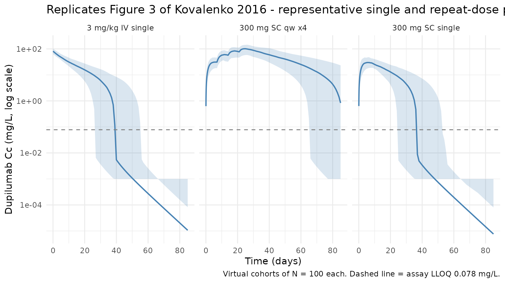

Kovalenko_2016_dupilumab
Source:vignettes/articles/Kovalenko_2016_dupilumab.Rmd
Kovalenko_2016_dupilumab.RmdModel and source
- Citation: Kovalenko P, DiCioccio AT, Davis JD, et al. Exploratory Population PK Analysis of Dupilumab, a Fully Human Monoclonal Antibody Against IL-4Ralpha, in Atopic Dermatitis Patients and Normal Volunteers. CPT Pharmacometrics Syst Pharmacol. 2016;5(11):617-624. doi:10.1002/psp4.12136
- Description: Dupilumab exploratory population PK model (Kovalenko 2016; 2-cmt with parallel linear + Michaelis-Menten elimination)
- Article: CPT Pharmacometrics Syst Pharmacol. 2016;5(11):617-624 (open access via PMC5655850)
Population
Kovalenko 2016 pooled two Phase 1 studies of healthy volunteers and four Phase 2 studies of patients with moderate-to-severe atopic dermatitis (AD). The analysis dataset comprised 197 participants (96 female / 101 male; mean age 37 years; mean weight 76 kg) contributing 2,518 serum dupilumab measurements. Source studies were NCT01015027 (R668-AS-0907; single IV at 1, 3, 8, 12 mg/kg and single SC at 150 or 300 mg), NCT01259323 (R668-AD-0914; 4x weekly SC at 75, 150, or 300 mg), NCT01385657 (R668-AD-1026; 4x weekly SC at 150 or 300 mg), NCT01484600 (R668-HV-1108; single SC 300 mg), NCT01548404 (R668-AD-1117; 12x weekly SC 300 mg), and NCT01639040 (R668-AD-1121; 4x weekly SC at 100 or 300 mg with topical corticosteroids). Baseline demographics are in the Results > Data subsection (page 619); per-study dosing and sampling designs are in Table 1.
The same information is available programmatically via
readModelDb("Kovalenko_2016_dupilumab")$population.
Source trace
Every structural parameter, covariate effect, IIV variance, and residual-error term below comes from Kovalenko 2016 Table 2, column “BLQ data included” (the primary model; the “BLQ data excluded” column is an explicitly-labelled sensitivity analysis).
| Equation / parameter | Value | Source location |
|---|---|---|
lvc (V2, central volume at 75 kg) |
log(2.74) L |
Table 2 row “V2 (L)” |
lke (ke, linear elimination rate) |
log(0.0459) 1/day |
Table 2 row “ke (1/d)” |
lk23 (k23, central-to-peripheral rate) |
log(0.0652) 1/day |
Table 2 row “k23 (1/d)” |
lk32 (k32, peripheral-to-central rate) |
log(0.129) 1/day |
Table 2 row “k32 (1/d)” |
lka (ka, first-order absorption rate) |
log(0.254) 1/day |
Table 2 row “ka (1/d)” |
lvm (Vm, maximum MM elimination rate) |
log(0.968) mg/L/day |
Table 2 row “Vm (mg/L/d)” |
Km (Michaelis-Menten constant) |
fixed(0.01) mg/L |
Table 2 row “Km (mg/L)”; fixed because OFV insensitive below ~0.01 mg/L |
lfdepot (F, SC bioavailability) |
log(0.607) |
Table 2 row “F (unitless)” |
e_wt_vc (weight exponent on V2) |
0.705 |
Table 2 row “V2 ~ weight”; Eq. 1 gives the form V2 = theta1 * (WT/75)^theta2 |
var(etalvc) |
0.0225 |
Table 2 row “omega^2 (V2)” |
var(etalke) |
0.131 |
Table 2 row “omega^2 (ke)” |
var(etalka) |
0.251 |
Table 2 row “omega^2 (ka)” |
var(etalvm) |
0.0428 |
Table 2 row “omega^2 (Vm)” |
CcpropSd (proportional SD) |
0.242 (= 24.2 %CV on the linear scale) |
Table 2 row “sigma^2 proportional (CV%)” |
CcaddSd (additive SD) |
fixed(0.03) mg/L |
Table 2 row “sigma^2 additive (mg/L)”; fixed when BLQ data included |
| Structure: 2-cmt + parallel linear/MM elim. | n/a | Figure 1 schematic; Methods p. 619 (“two-compartment model with parallel linear and MM…”) |
| BLQ treatment | Beal M3 | Methods p. 619 (“BLQ … utilized … applying the M3 method”) |
The column header “omega^2” in Table 2 indicates that the tabulated
values are variances of the log-scale random effects, which matches what
nlmixr2 stores on the right-hand side of the ~ operator.
They are therefore inserted verbatim (no squaring) in
ini(). The “sigma^2 proportional (CV%)” row reports the
coefficient of variation of the proportional residual, so 24.2 % maps to
an SD of 0.242 on the linear scale, which is what CcpropSd
stores.
Parameterization notes
Kovalenko 2016 uses a rate-based parameterization (ke,
k23, k32) rather than the
CL/Q/Vp parameterization that is
canonical in nlmixr2lib. The model file preserves the paper’s
parameterization verbatim. Derived quantities agree with Table 2’s
“Derived parameters” footnote:
- Linear clearance:
CL = ke * V2 = 0.0459 * 2.74 = 0.126 L/day(Table 2: 0.126). - Intercompartmental clearance:
Q = k23 * V2 = 0.0652 * 2.74 = 0.179 L/day(Table 2: 0.179). - Peripheral volume:
V3 = V2 * k23 / k32 = 2.74 * 0.0652 / 0.129 = 1.385 L(Table 2: 1.38).
The MM elimination term central * Vm / (Km + central/vc)
is the mass-rate form consistent with Vm reported in
mg/L/day (see Methods: “the unit of maximum target-mediated elimination
rate (Vm) was mg/L/d, which can be interpreted as an assumption of a
proportional relationship between the production rate of the target and
the volume of the central compartment”).
Virtual cohort
Three single-dose cohorts are simulated, each covering one representative regimen from Table 1: 3 mg/kg single IV infusion (FIH rich-sampling cohort), 300 mg single SC injection (healthy-volunteer FIH / HV-1108 cohort), and the labelled-adjacent 300 mg SC weekly x4 (AD-0914 / AD-1026 style regimen). Body weight is drawn from a truncated normal centred on the paper’s 75 kg reference weight.
set.seed(20260424)
n_subj <- 100
make_cohort <- function(n, cohort_label, id_offset = 0L) {
tibble::tibble(
id = id_offset + seq_len(n),
WT = pmin(pmax(rnorm(n, mean = 76, sd = 15), 45), 130),
cohort = cohort_label
)
}
cohort_iv <- make_cohort(n_subj, "3 mg/kg IV single", id_offset = 0L)
cohort_sc <- make_cohort(n_subj, "300 mg SC single", id_offset = 100L)
cohort_qwx4 <- make_cohort(n_subj, "300 mg SC qw x4", id_offset = 200L)
# Observation grid - dense early, sparse out to ~85 days (FIH sampling horizon)
obs_times <- sort(unique(c(
seq(0, 2, by = 1/24), # hours 0-48
seq(2.5, 14, by = 0.5), # early phase
seq(15, 85, by = 1) # long tail
)))
# IV cohort: 3 mg/kg as an instantaneous "bolus" to central at day 0
ev_iv <- cohort_iv |>
dplyr::mutate(time = 0, amt = 3 * WT, cmt = "central", evid = 1L) |>
dplyr::bind_rows(
tidyr::crossing(cohort_iv, time = obs_times) |>
dplyr::mutate(amt = 0, cmt = NA_character_, evid = 0L)
)
# SC single cohort: 300 mg to depot at day 0
ev_sc <- cohort_sc |>
dplyr::mutate(time = 0, amt = 300, cmt = "depot", evid = 1L) |>
dplyr::bind_rows(
tidyr::crossing(cohort_sc, time = obs_times) |>
dplyr::mutate(amt = 0, cmt = NA_character_, evid = 0L)
)
# SC weekly x4 cohort
dose_times_qw <- c(0, 7, 14, 21)
ev_qwx4 <- cohort_qwx4 |>
tidyr::crossing(time = dose_times_qw) |>
dplyr::mutate(amt = 300, cmt = "depot", evid = 1L) |>
dplyr::bind_rows(
tidyr::crossing(cohort_qwx4, time = obs_times) |>
dplyr::mutate(amt = 0, cmt = NA_character_, evid = 0L)
)
events <- dplyr::bind_rows(ev_iv, ev_sc, ev_qwx4) |>
dplyr::arrange(id, time, dplyr::desc(evid)) |>
dplyr::select(id, time, amt, cmt, evid, WT, cohort)
stopifnot(!anyDuplicated(unique(events[, c("id", "time", "evid")])))Simulation
mod <- rxode2::rxode2(readModelDb("Kovalenko_2016_dupilumab"))
#> ℹ parameter labels from comments will be replaced by 'label()'
sim <- rxode2::rxSolve(mod, events = events, keep = c("WT", "cohort"))Figure replication - concentration-time profiles by regimen
Kovalenko 2016 Figure 3 shows examples of log-scaled dupilumab concentration- time profiles under different single- and multiple-dose regimens, spanning the target-mediated phase as concentrations approach the LLOQ (0.078 mg/L). The plot below reproduces the 5-50-95 percentile envelopes for the three virtual cohorts above.
vpc <- sim |>
dplyr::filter(!is.na(Cc), time > 0) |>
dplyr::group_by(cohort, time) |>
dplyr::summarise(
Q05 = stats::quantile(Cc, 0.05, na.rm = TRUE),
Q50 = stats::quantile(Cc, 0.50, na.rm = TRUE),
Q95 = stats::quantile(Cc, 0.95, na.rm = TRUE),
.groups = "drop"
)
ggplot(vpc, aes(time, Q50)) +
geom_ribbon(aes(ymin = pmax(Q05, 1e-3), ymax = Q95), alpha = 0.2, fill = "#4682b4") +
geom_line(colour = "#4682b4", linewidth = 0.7) +
geom_hline(yintercept = 0.078, linetype = "dashed", colour = "grey50") +
facet_wrap(~cohort, scales = "fixed") +
scale_y_log10() +
labs(
x = "Time (days)",
y = "Dupilumab Cc (mg/L, log scale)",
title = "Replicates Figure 3 of Kovalenko 2016 - representative single and repeat-dose profiles",
caption = "Virtual cohorts of N = 100 each. Dashed line = assay LLOQ 0.078 mg/L."
) +
theme_minimal()
The characteristic target-mediated terminal phase (sharp decline below ~1 mg/L) reproduces the shape reported in Kovalenko 2016 Figure 3.
PKNCA validation
NCA on the 300 mg single SC cohort. This is the cohort most comparable to the single-dose FIH SC arm (NCT01015027) in Table 1 of the paper.
nca_conc <- sim |>
dplyr::filter(cohort == "300 mg SC single", !is.na(Cc), time > 0) |>
dplyr::mutate(treatment = cohort) |>
dplyr::select(id, time, Cc, treatment)
nca_dose <- cohort_sc |>
dplyr::mutate(time = 0, amt = 300, treatment = cohort) |>
dplyr::select(id, time, amt, treatment)
conc_obj <- PKNCA::PKNCAconc(nca_conc, Cc ~ time | treatment + id)
dose_obj <- PKNCA::PKNCAdose(nca_dose, amt ~ time | treatment + id)
intervals <- data.frame(
start = 0,
end = 85,
cmax = TRUE,
tmax = TRUE,
auclast = TRUE,
half.life = TRUE
)
nca_res <- PKNCA::pk.nca(PKNCA::PKNCAdata(conc_obj, dose_obj, intervals = intervals))
#> Warning: Requesting an AUC range starting (0) before the first measurement (0.0416667) is not allowed
#> Requesting an AUC range starting (0) before the first measurement (0.0416667) is not allowed
#> Requesting an AUC range starting (0) before the first measurement (0.0416667) is not allowed
#> Requesting an AUC range starting (0) before the first measurement (0.0416667) is not allowed
#> Requesting an AUC range starting (0) before the first measurement (0.0416667) is not allowed
#> Requesting an AUC range starting (0) before the first measurement (0.0416667) is not allowed
#> Requesting an AUC range starting (0) before the first measurement (0.0416667) is not allowed
#> Requesting an AUC range starting (0) before the first measurement (0.0416667) is not allowed
#> Requesting an AUC range starting (0) before the first measurement (0.0416667) is not allowed
#> Requesting an AUC range starting (0) before the first measurement (0.0416667) is not allowed
#> Requesting an AUC range starting (0) before the first measurement (0.0416667) is not allowed
#> Requesting an AUC range starting (0) before the first measurement (0.0416667) is not allowed
#> Requesting an AUC range starting (0) before the first measurement (0.0416667) is not allowed
#> Requesting an AUC range starting (0) before the first measurement (0.0416667) is not allowed
#> Requesting an AUC range starting (0) before the first measurement (0.0416667) is not allowed
#> Requesting an AUC range starting (0) before the first measurement (0.0416667) is not allowed
#> Requesting an AUC range starting (0) before the first measurement (0.0416667) is not allowed
#> Requesting an AUC range starting (0) before the first measurement (0.0416667) is not allowed
#> Requesting an AUC range starting (0) before the first measurement (0.0416667) is not allowed
#> Requesting an AUC range starting (0) before the first measurement (0.0416667) is not allowed
#> Requesting an AUC range starting (0) before the first measurement (0.0416667) is not allowed
#> Requesting an AUC range starting (0) before the first measurement (0.0416667) is not allowed
#> Requesting an AUC range starting (0) before the first measurement (0.0416667) is not allowed
#> Requesting an AUC range starting (0) before the first measurement (0.0416667) is not allowed
#> Requesting an AUC range starting (0) before the first measurement (0.0416667) is not allowed
#> ■■■■■■■■■ 25% | ETA: 6s
#> Warning: Requesting an AUC range starting (0) before the first measurement (0.0416667) is not allowed
#> Requesting an AUC range starting (0) before the first measurement (0.0416667) is not allowed
#> Requesting an AUC range starting (0) before the first measurement (0.0416667) is not allowed
#> Requesting an AUC range starting (0) before the first measurement (0.0416667) is not allowed
#> Requesting an AUC range starting (0) before the first measurement (0.0416667) is not allowed
#> Requesting an AUC range starting (0) before the first measurement (0.0416667) is not allowed
#> Requesting an AUC range starting (0) before the first measurement (0.0416667) is not allowed
#> Requesting an AUC range starting (0) before the first measurement (0.0416667) is not allowed
#> Requesting an AUC range starting (0) before the first measurement (0.0416667) is not allowed
#> Requesting an AUC range starting (0) before the first measurement (0.0416667) is not allowed
#> Requesting an AUC range starting (0) before the first measurement (0.0416667) is not allowed
#> Requesting an AUC range starting (0) before the first measurement (0.0416667) is not allowed
#> Requesting an AUC range starting (0) before the first measurement (0.0416667) is not allowed
#> Requesting an AUC range starting (0) before the first measurement (0.0416667) is not allowed
#> Requesting an AUC range starting (0) before the first measurement (0.0416667) is not allowed
#> Requesting an AUC range starting (0) before the first measurement (0.0416667) is not allowed
#> Requesting an AUC range starting (0) before the first measurement (0.0416667) is not allowed
#> Requesting an AUC range starting (0) before the first measurement (0.0416667) is not allowed
#> Requesting an AUC range starting (0) before the first measurement (0.0416667) is not allowed
#> Requesting an AUC range starting (0) before the first measurement (0.0416667) is not allowed
#> Requesting an AUC range starting (0) before the first measurement (0.0416667) is not allowed
#> Requesting an AUC range starting (0) before the first measurement (0.0416667) is not allowed
#> Requesting an AUC range starting (0) before the first measurement (0.0416667) is not allowed
#> Requesting an AUC range starting (0) before the first measurement (0.0416667) is not allowed
#> Requesting an AUC range starting (0) before the first measurement (0.0416667) is not allowed
#> Requesting an AUC range starting (0) before the first measurement (0.0416667) is not allowed
#> Requesting an AUC range starting (0) before the first measurement (0.0416667) is not allowed
#> Requesting an AUC range starting (0) before the first measurement (0.0416667) is not allowed
#> Requesting an AUC range starting (0) before the first measurement (0.0416667) is not allowed
#> Requesting an AUC range starting (0) before the first measurement (0.0416667) is not allowed
#> Requesting an AUC range starting (0) before the first measurement (0.0416667) is not allowed
#> Requesting an AUC range starting (0) before the first measurement (0.0416667) is not allowed
#> Requesting an AUC range starting (0) before the first measurement (0.0416667) is not allowed
#> Requesting an AUC range starting (0) before the first measurement (0.0416667) is not allowed
#> Requesting an AUC range starting (0) before the first measurement (0.0416667) is not allowed
#> Requesting an AUC range starting (0) before the first measurement (0.0416667) is not allowed
#> Requesting an AUC range starting (0) before the first measurement (0.0416667) is not allowed
#> Requesting an AUC range starting (0) before the first measurement (0.0416667) is not allowed
#> Requesting an AUC range starting (0) before the first measurement (0.0416667) is not allowed
#> Requesting an AUC range starting (0) before the first measurement (0.0416667) is not allowed
#> Requesting an AUC range starting (0) before the first measurement (0.0416667) is not allowed
#> Requesting an AUC range starting (0) before the first measurement (0.0416667) is not allowed
#> Requesting an AUC range starting (0) before the first measurement (0.0416667) is not allowed
#> Requesting an AUC range starting (0) before the first measurement (0.0416667) is not allowed
#> Requesting an AUC range starting (0) before the first measurement (0.0416667) is not allowed
#> ■■■■■■■■■■■■■■■■■■■■■■ 70% | ETA: 2s
#> Warning: Requesting an AUC range starting (0) before the first measurement (0.0416667) is not allowed
#> Requesting an AUC range starting (0) before the first measurement (0.0416667) is not allowed
#> Requesting an AUC range starting (0) before the first measurement (0.0416667) is not allowed
#> Requesting an AUC range starting (0) before the first measurement (0.0416667) is not allowed
#> Requesting an AUC range starting (0) before the first measurement (0.0416667) is not allowed
#> Requesting an AUC range starting (0) before the first measurement (0.0416667) is not allowed
#> Requesting an AUC range starting (0) before the first measurement (0.0416667) is not allowed
#> Requesting an AUC range starting (0) before the first measurement (0.0416667) is not allowed
#> Requesting an AUC range starting (0) before the first measurement (0.0416667) is not allowed
#> Requesting an AUC range starting (0) before the first measurement (0.0416667) is not allowed
#> Requesting an AUC range starting (0) before the first measurement (0.0416667) is not allowed
#> Requesting an AUC range starting (0) before the first measurement (0.0416667) is not allowed
#> Requesting an AUC range starting (0) before the first measurement (0.0416667) is not allowed
#> Requesting an AUC range starting (0) before the first measurement (0.0416667) is not allowed
#> Requesting an AUC range starting (0) before the first measurement (0.0416667) is not allowed
#> Requesting an AUC range starting (0) before the first measurement (0.0416667) is not allowed
#> Requesting an AUC range starting (0) before the first measurement (0.0416667) is not allowed
#> Requesting an AUC range starting (0) before the first measurement (0.0416667) is not allowed
#> Requesting an AUC range starting (0) before the first measurement (0.0416667) is not allowed
#> Requesting an AUC range starting (0) before the first measurement (0.0416667) is not allowed
#> Requesting an AUC range starting (0) before the first measurement (0.0416667) is not allowed
#> Requesting an AUC range starting (0) before the first measurement (0.0416667) is not allowed
#> Requesting an AUC range starting (0) before the first measurement (0.0416667) is not allowed
#> Requesting an AUC range starting (0) before the first measurement (0.0416667) is not allowed
#> Requesting an AUC range starting (0) before the first measurement (0.0416667) is not allowed
#> Requesting an AUC range starting (0) before the first measurement (0.0416667) is not allowed
#> Requesting an AUC range starting (0) before the first measurement (0.0416667) is not allowed
#> Requesting an AUC range starting (0) before the first measurement (0.0416667) is not allowed
#> Requesting an AUC range starting (0) before the first measurement (0.0416667) is not allowed
#> Requesting an AUC range starting (0) before the first measurement (0.0416667) is not allowed
knitr::kable(summary(nca_res), caption = "Simulated NCA (300 mg SC single dose).")| start | end | treatment | N | auclast | cmax | tmax | half.life |
|---|---|---|---|---|---|---|---|
| 0 | 85 | 300 mg SC single | 100 | NC | 30.5 [31.5] | 6.00 [2.50, 12.5] | 5.33 [0.279] |
Comparison against published observations
Kovalenko 2016 does not tabulate NCA parameters per regimen - Figure 3 is qualitative and the Results section focuses on the population PK estimates in Table 2 rather than on compartmental NCA. A typical-value (“population typical”) prediction with IIV zeroed out is therefore used as a self-consistency check against the published derived quantities (CL = 0.126 L/day; half-life approaches zero as concentrations drop into the target- mediated phase):
mod_typical <- mod |> rxode2::zeroRe()
ev_typical_sc <- tibble::tibble(
id = 1L, time = 0, amt = 300, cmt = "depot", evid = 1L, WT = 75, cohort = "typical"
) |>
dplyr::bind_rows(
tibble::tibble(
id = 1L, time = obs_times, amt = 0, cmt = NA_character_, evid = 0L,
WT = 75, cohort = "typical"
)
) |>
dplyr::arrange(time, dplyr::desc(evid))
sim_typical <- rxode2::rxSolve(mod_typical, events = ev_typical_sc, keep = "WT") |>
as.data.frame() |>
dplyr::filter(!is.na(Cc), time > 0)
#> ℹ omega/sigma items treated as zero: 'etalvc', 'etalke', 'etalka', 'etalvm'
typical_summary <- tibble::tibble(
metric = c(
"Cmax (mg/L)",
"Tmax (day)",
"Cc at day 14 (mg/L)",
"Cc at day 28 (mg/L)",
"Cc at day 57 (mg/L)"
),
typical_value = c(
max(sim_typical$Cc),
sim_typical$time[which.max(sim_typical$Cc)],
stats::approx(sim_typical$time, sim_typical$Cc, xout = 14)$y,
stats::approx(sim_typical$time, sim_typical$Cc, xout = 28)$y,
stats::approx(sim_typical$time, sim_typical$Cc, xout = 57)$y
)
)
knitr::kable(typical_summary, digits = 3,
caption = "Typical-subject single 300 mg SC profile (WT = 75 kg; IIV zeroed).")| metric | typical_value |
|---|---|
| Cmax (mg/L) | 32.630 |
| Tmax (day) | 6.000 |
| Cc at day 14 (mg/L) | 22.580 |
| Cc at day 28 (mg/L) | 6.685 |
| Cc at day 57 (mg/L) | 0.000 |
Assumptions and deviations
- Kovalenko 2016 Table 2 presents two columns of parameter estimates: the primary fit with BLQ data included (using the M3 method) and a sensitivity analysis with BLQ data excluded. This model uses the BLQ-included column, as that is the model the paper presents as primary (diagnostic plots, Results narrative, and abstract all reference the BLQ-included estimates).
- The model preserves the paper’s rate-based parameterization
(
ke,k23,k32) rather than reparameterizing toCL/Q/Vp. Thelke/lk23/lk32/lvmnames deviate from the nlmixr2lib canonicallcl/lqnaming; the sister modelKovalenko_2020_dupilumab.Radopts the same convention because IIV in the source is defined on the rates, not on clearances. -
Kmwas fixed at 0.01 mg/L in the paper because the OFV was insensitive to values below ~0.01 mg/L (Results section, page 620);CcaddSdwas fixed at 0.03 mg/L for the BLQ-included analysis (Methods section). - The virtual cohort uses a single body-weight distribution centred on the paper’s reported mean (76 kg). Age, sex, race, and study-site effects are not explicitly reproduced - the published model does not use them as covariates (only WT enters the structural model, through V2).
- Kovalenko 2016 does not tabulate observed NCA values or individual Cmax/AUC summaries, so the PKNCA block here is a self-consistency check of the implemented model rather than a numerical comparison against published NCA.
- No unit conversion is required between dose (mg) and concentration
(mg/L) because
central/vchas the natural unit mg/L.